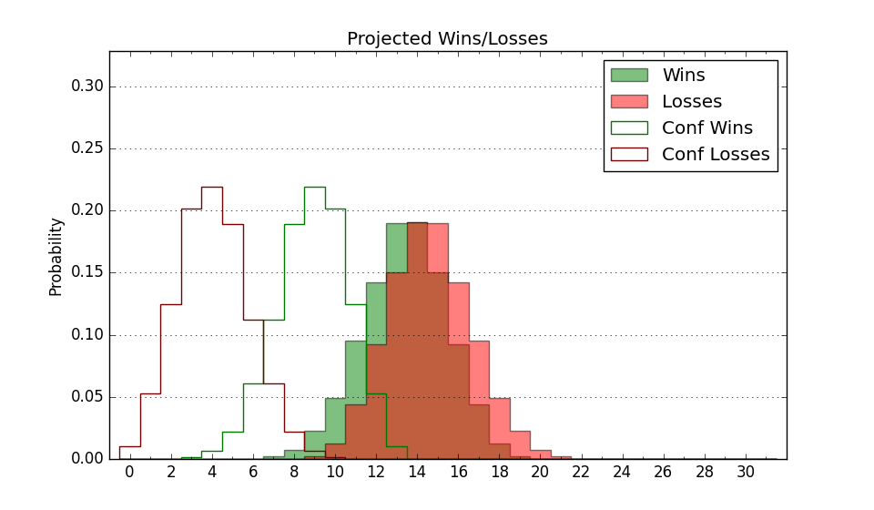

| Home | Game Probabilities | Conferences | Preseason Predictions | Odds Charts | NCAA Tournament |
| City: | Washington, D.C. | |
| Conference: | Mid-Eastern (1st)
| |
| Record: | 0-0 (Conf) 3-9 (Overall) | |
| Ratings: | Comp.: -5.3 (232nd) Net: -5.4 (231st) Off: 106.7 (120th) Def: 112.1 (324th) SoR: 0.0 (217th) |
| Remaining | ||||||
|---|---|---|---|---|---|---|
| Date | Opponent | Win Prob | Pred. | |||
| 12/30 | @ La Salle (220) | 33.6% | L 75-80 | |||
| 1/3 | Yale (112) | 38.9% | L 73-76 | |||
| 1/6 | @ North Carolina Central (275) | 45.7% | L 75-76 | |||
| 1/8 | @ South Carolina St. (338) | 65.6% | W 82-77 | |||
| 1/20 | Norfolk St. (192) | 57.4% | W 76-74 | |||
| 1/27 | @ Morgan St. (345) | 68.3% | W 82-77 | |||
| 1/29 | @ Coppin St. (358) | 79.7% | W 75-65 | |||
| 2/3 | (N) Hampton (331) | 74.6% | W 82-74 | |||
| 2/5 | @ Delaware St. (327) | 60.5% | W 76-73 | |||
| 2/17 | North Carolina Central (275) | 74.2% | W 79-72 | |||
| 2/19 | South Carolina St. (338) | 86.7% | W 87-73 | |||
| 2/24 | Morgan St. (345) | 88.0% | W 87-72 | |||
| 2/26 | Coppin St. (358) | 93.0% | W 79-61 | |||
| 3/2 | @ Md Eastern Shore (346) | 68.8% | W 77-71 | |||
| 3/4 | Delaware St. (327) | 83.9% | W 80-68 | |||
| 3/7 | @ Norfolk St. (192) | 28.3% | L 72-78 | |||
| Previous | Game Score | |||||
| Date | Opponent | Win Prob | Result | Off | Def | Net |
| 11/6 | Hampton (331) | 84.4% | W 92-80 | -0.3 | -1.3 | -1.6 |
| 11/9 | @Georgia Tech (121) | 17.1% | L 85-88 | 16.9 | 3.3 | 20.2 |
| 11/12 | @James Madison (71) | 9.1% | L 86-107 | 9.5 | -12.7 | -3.2 |
| 11/14 | Boston University (280) | 75.0% | W 64-53 | -16.5 | 23.8 | 7.3 |
| 11/18 | @Rutgers (76) | 9.6% | L 63-85 | -4.3 | -7.0 | -11.3 |
| 11/20 | @Bryant (162) | 24.2% | L 61-67 | -13.3 | 11.3 | -1.9 |
| 11/25 | @Mount St. Mary's (233) | 35.3% | W 87-83 | 2.5 | 9.6 | 12.1 |
| 11/28 | Cincinnati (41) | 17.4% | L 81-86 | 17.8 | -2.3 | 15.6 |
| 12/11 | @Penn (177) | 26.0% | L 68-78 | 1.6 | -8.2 | -6.7 |
| 12/16 | (N) Jackson St. (258) | 56.7% | L 74-81 | -7.4 | -5.7 | -13.2 |
| 12/17 | (N) Texas Southern (304) | 69.0% | L 78-79 | 2.5 | -11.6 | -9.1 |
| 12/20 | @UC Santa Barbara (178) | 26.4% | L 81-94 | 1.8 | -14.5 | -12.7 |
| Stats & Trends | |||||
|---|---|---|---|---|---|
| Current | Day | Week | Month | Season | |
| Composite | -5.3 | -0.1 | -0.4 | -4.7 | -0.3 |
| Comp Rank | 232 | -3 | -8 | -67 | -18 |
| Net Efficiency | -5.4 | -0.1 | -0.5 | -7.2 | -- |
| Net Rank | 231 | -- | -3 | -81 | -- |
| Off Efficiency | 106.7 | +0.1 | +0.0 | -2.9 | -- |
| Off Rank | 120 | +3 | +1 | -44 | -- |
| Def Efficiency | 112.1 | -0.2 | -0.5 | -4.3 | -- |
| Def Rank | 324 | -- | -4 | -69 | -- |
| SoS Rank | 120 | -4 | -5 | -21 | -- |
| Exp. Wins | 13.4 | +0.1 | -0.0 | -3.6 | -1.3 |
| Exp. Conf Wins | 8.9 | +0.1 | +0.0 | -1.3 | +0.4 |
| Conf Champ Prob | 25.1 | +0.3 | -0.3 | -28.7 | -6.4 |

| Advanced Stats | ||
|---|---|---|
| Stat | Value | Rank |
| Off Eff FG % | 0.535 | 73 |
| Off Ast Ratio | 0.137 | 197 |
| Off ORB% | 0.281 | 159 |
| Off TO Rate | 0.183 | 342 |
| Off FT Ratio | 0.360 | 119 |
| Def Eff FG % | 0.540 | 309 |
| Def Ast Ratio | 0.148 | 237 |
| Def ORB% | 0.289 | 221 |
| Def TO Rate | 0.131 | 295 |
| Def FT Ratio | 0.404 | 304 |